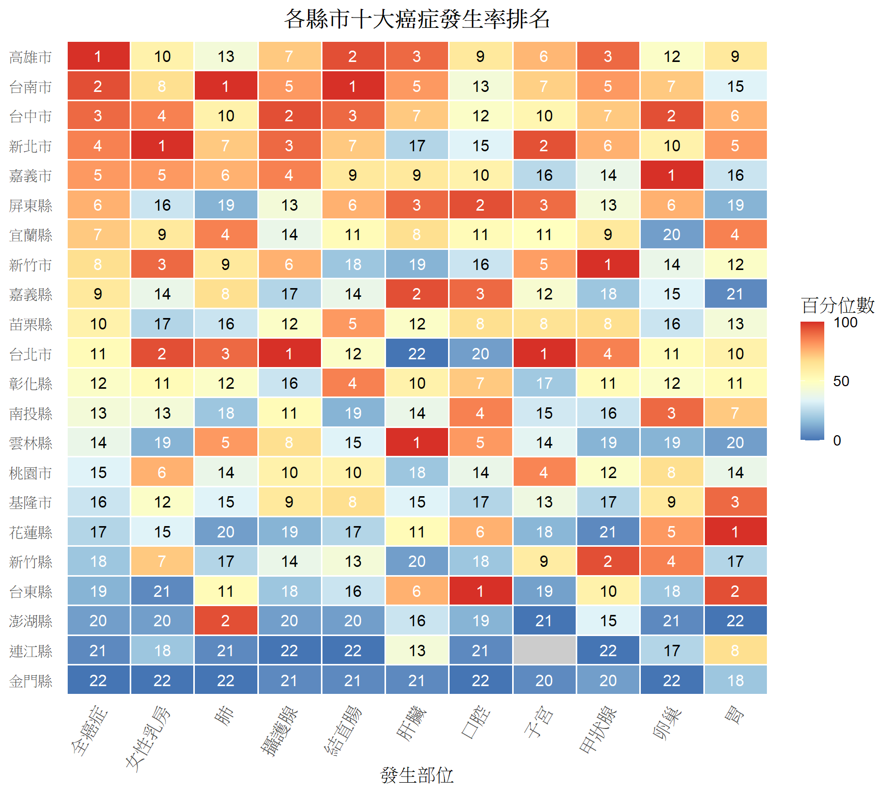

TWCR, short for Taiwan Cancer Registry Center, is a data center located in the Public Health building of NTU. It has been requested by the government to collect and sort cancer data, to build a national cancer registry database. Due to the high coverage of health insurance in Taiwan, TWCR is able to possess a large amount of high-quality data. They publish annual reports on cancer in Taiwan, using the database.
The reports can be found in:
https://twcr.tw/?page_id=1354 https://www.hpa.gov.tw/Pages/List.aspx?nodeid=269
However, these annual reports consist of countless descriptive charts and text. I proposed a way to visualize the data, inspired by the GBD Compare website from IHME. https://vizhub.healthdata.org/gbd-compare/
Using a heatmap, people will be able to browse through the whole dataset rapidly, while having a clear picture of how the incidence and mortality rank.
Note: the original analysis used TWCR’s internal registry data, which cannot leave the center. The table below contains pseudo-data reconstructed from the exported figure (same rank values, same layout) purely to illustrate the visualization method.
# Pseudo rank data (22 counties x 11 cancer sites, 1 = highest incidence rank)
rank_wide <- tibble::tribble(
~county, ~全癌症, ~女性乳房, ~肺, ~攝護腺, ~結直腸, ~肝臟, ~口腔, ~子宮, ~甲狀腺, ~卵巢, ~胃,
"高雄市", 1, 10, 13, 7, 2, 3, 9, 6, 3, 12, 9,
"台南市", 2, 8, 1, 5, 1, 5, 13, 7, 5, 7, 15,
"台中市", 3, 4, 10, 2, 3, 7, 12, 10, 7, 2, 6,
"新北市", 4, 1, 7, 3, 7, 17, 15, 2, 6, 10, 5,
"嘉義市", 5, 5, 6, 4, 9, 9, 10, 16, 14, 1, 16,
"屏東縣", 6, 16, 19, 13, 6, 3, 2, 3, 13, 6, 19,
"宜蘭縣", 7, 9, 4, 14, 11, 8, 11, 11, 9, 20, 4,
"新竹市", 8, 3, 9, 6, 18, 19, 16, 5, 1, 14, 12,
"嘉義縣", 9, 14, 8, 17, 14, 2, 3, 12, 18, 15, 21,
"苗栗縣", 10, 17, 16, 12, 5, 12, 8, 8, 8, 16, 13,
"台北市", 11, 2, 3, 1, 12, 22, 20, 1, 4, 11, 10,
"彰化縣", 12, 11, 12, 16, 4, 10, 7, 17, 11, 12, 11,
"南投縣", 13, 13, 18, 11, 19, 14, 4, 15, 16, 3, 7,
"雲林縣", 14, 19, 5, 8, 15, 1, 5, 14, 19, 19, 20,
"桃園市", 15, 6, 14, 10, 10, 18, 14, 4, 12, 8, 14,
"基隆市", 16, 12, 15, 9, 8, 15, 17, 13, 17, 9, 3,
"花蓮縣", 17, 15, 20, 19, 17, 11, 6, 18, 21, 5, 1,
"新竹縣", 18, 7, 17, 14, 13, 20, 18, 9, 2, 4, 17,
"台東縣", 19, 21, 11, 18, 16, 6, 1, 19, 10, 18, 2,
"澎湖縣", 20, 20, 2, 20, 20, 16, 19, 21, 15, 21, 22,
"連江縣", 21, 18, 21, 22, 22, 13, 21, NA, 22, 17, 8,
"金門縣", 22, 22, 22, 21, 21, 21, 22, 20, 20, 22, 18
)
cancer_levels <- c("全癌症", "女性乳房", "肺", "攝護腺", "結直腸",
"肝臟", "口腔", "子宮", "甲狀腺", "卵巢", "胃")
# Rank -> within-column percentile (rank 1 -> 100, largest rank in the
# column -> 0). 連江縣's 子宮 (uterine) rank is NA: the female population
# there is too small to compute a stable rank, shown as grey in the plot.
rank_long <- rank_wide |>
tidyr::pivot_longer(cols = -county, names_to = "cancer", values_to = "rank") |>
dplyr::mutate(cancer = factor(cancer, levels = cancer_levels)) |>
dplyr::group_by(cancer) |>
dplyr::mutate(
n_valid = sum(!is.na(rank)),
percentile = 100 * (n_valid - rank) / (n_valid - 1)
) |>
dplyr::ungroup() |>
dplyr::mutate(
county = factor(county, levels = rev(rank_wide$county)),
label_color = dplyr::if_else(
percentile >= 65 | percentile <= 20, "white", "black"
)
)The ranking of incidence for the top 10 cancers in Taiwan.
The x-axis represents the cancer site (tumor location); the y-axis represents the city/county.
ggplot2::ggplot(
rank_long, ggplot2::aes(x = cancer, y = county, fill = percentile)
) +
ggplot2::geom_tile(color = "white", linewidth = 0.6) +
ggplot2::geom_text(
ggplot2::aes(label = rank, color = label_color),
size = 4, show.legend = FALSE
) +
ggplot2::scale_color_identity() +
ggplot2::scale_fill_distiller(
palette = "RdYlBu", direction = -1,
limits = c(0, 100), na.value = "grey80",
name = "百分位數", breaks = c(0, 50, 100)
) +
ggplot2::scale_x_discrete(position = "bottom") +
ggplot2::labs(
title = "各縣市十大癌症發生率排名",
x = "發生部位", y = NULL
) +
ggplot2::theme_minimal(base_size = 13) +
ggplot2::theme(
panel.grid = ggplot2::element_blank(),
axis.text.x = ggplot2::element_text(angle = 60, hjust = 1),
plot.title = ggplot2::element_text(hjust = 0.5, face = "bold")
)